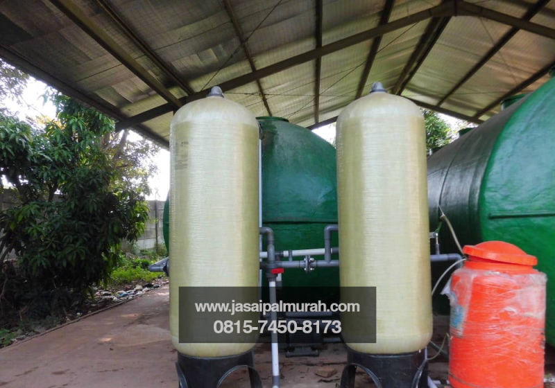
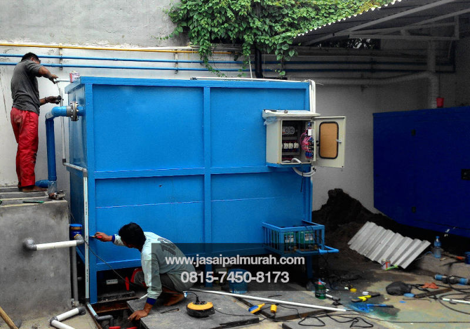
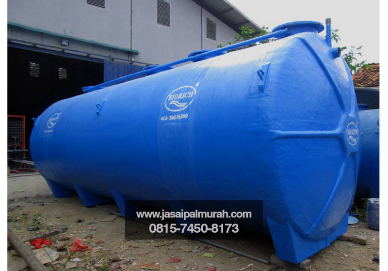
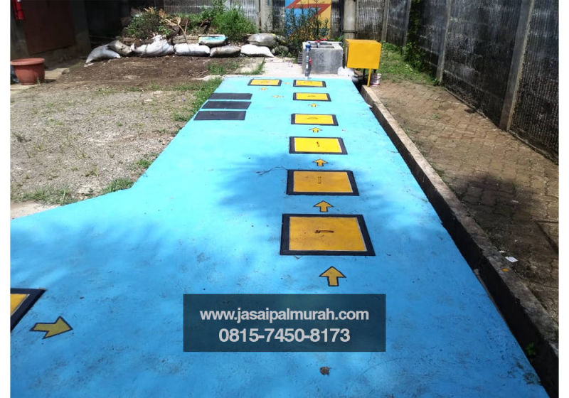
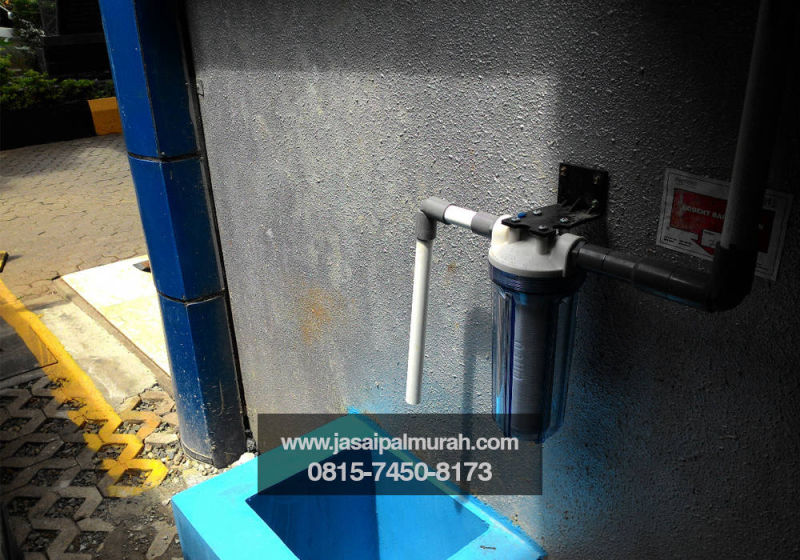
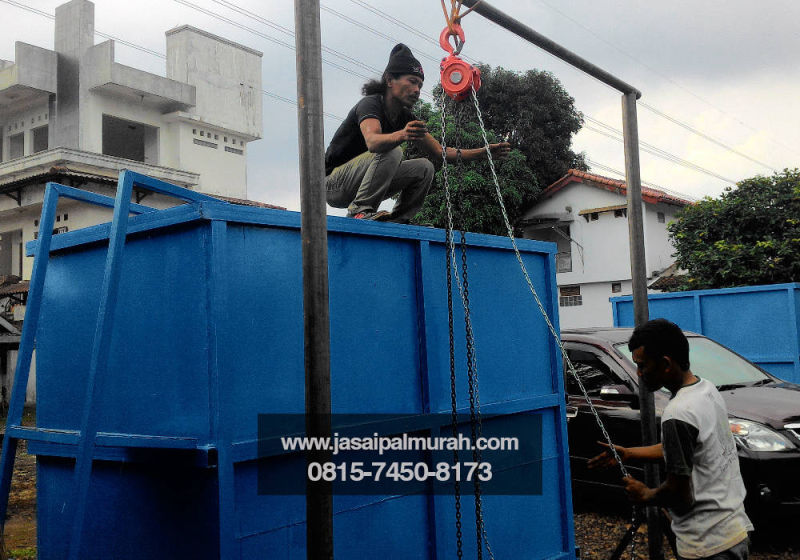
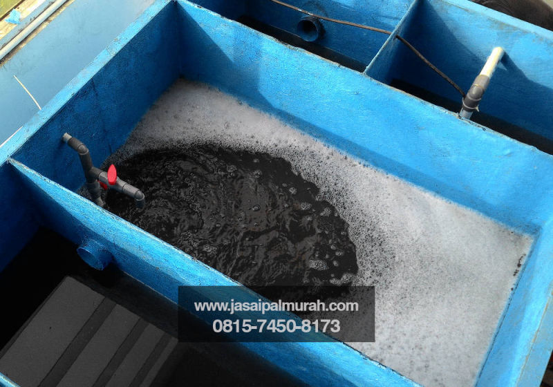
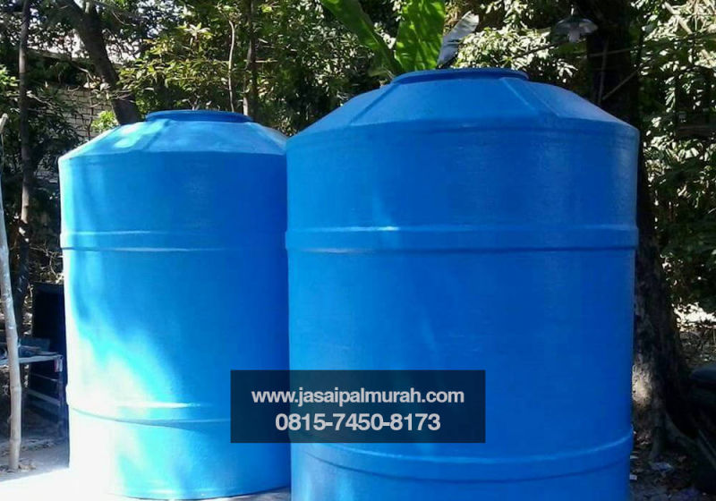

Kami Ahli IPAL Terstandar KLH, Konstraktor IPAL Pertambangan, Konstraktor IPAL Skala Besar, Produsen IPAL Puskesmas, Konstraktor IPAL Pabrik, Konstruksi Instalasi Air Limbah Kelapa Sawit, Pemasangan IPAL Bio Filter, Rekonstruksi IPAL Lembaga, Perawatan Instalasi Air Limbah Industri, Perusahaan IPAL Tekstil, Upgrade Instalasi Air Limbah Kelapa Sawit, Rekonstruksi IPAL Berkualitas, Desain Instalasi Air Limbah Restoran, Produsen IPAL Bio Filter, Perusahaan Instalasi Air Limbah Klinik, Sistem Instalasi Air Limbah Industri, Konsultan Instalasi Air Limbah Puskesmas, Rekanan Instalasi Air Limbah Puskesmas, Produsen Instalasi Air Limbah Kelapa Sawit, Pembuatan Instalasi Air Limbah Praktek Dokter
Untuk Biaya Instalasi Air Limbah Praktek Dokter, Sistem IPAL Terbaik, Upgrade IPAL Murah, Pemasangan Instalasi Air Limbah Instansi, Jasa Instalasi Air Limbah Restoran, Konstraktor Instalasi Air Limbah Rumah Sakit, Solusi Instalasi Air Limbah Lembaga, Perawatan Instalasi Air Limbah Kementerian. Hubungi 0815-7450-8173
Kami CV Tirta Bakti Semesta Produsen Instalasi Air Limbah Praktek Dokter, Perusahaan IPAL Kimiawi, Renovasi IPAL Instansi, Service Instalasi Air Limbah Hotel, Distributor IPAL Restoran, Perbaikan IPAL SNI, Produsen IPAL Medis, Tarif Instalasi Air Limbah Fiber, Perawatan IPAL Medis, Perawatan Instalasi Air Limbah Restoran
Kami juga Konsultan IPAL Laboratorium, Konstraktor IPAL Terbaik, Harga IPAL Kawasan, Perbaikan Instalasi Air Limbah Terstandar, Jual Instalasi Air Limbah Fiber, Harga IPAL Tekstil, Biaya IPAL Terintegrasi, Tender IPAL Lembaga, Konsultan IPAL Kelapa Sawit, Harga Instalasi Air Limbah Terbaik